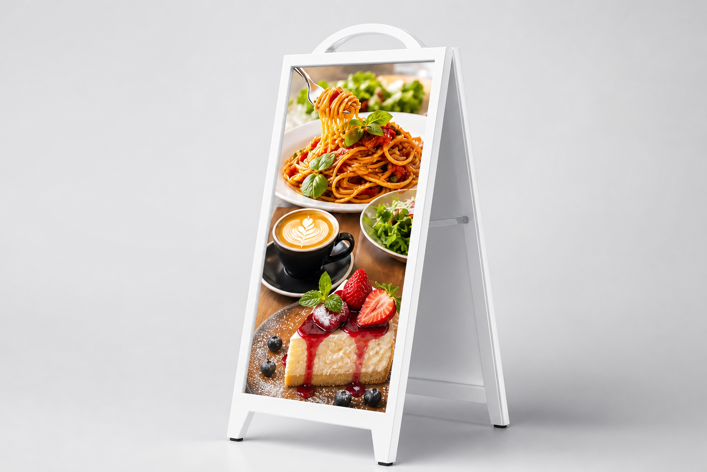

屋外で見える
4500cdの高輝度LED。昼間の店頭でも視認性を確保しやすく、夜は映像の光で存在感を作れます。

K-SLIMシリーズ
屋外IP65
明るい4500cd
5種タイプ展開
白・黒筐体
バッテリー選択
店舗用屋外デジタルサイネージ
K-SLIMシリーズは、店舗前に置ける屋外デジタルサイネージです。紙ポスターや電飾看板の代わりに、ランチメニュー、キャンペーン、営業時間案内、イベント告知を映像で表示できます。100V電源に接続し、映像はスマホやUSBで切り替え可能。5種の本体タイプ、白・黒の筐体色、バッテリー有無を選べる店舗用LED看板です。
看板を、貼り替えるものから切り替えるものへ。
4500cdの高輝度LED。昼間の店頭でも視認性を確保しやすく、夜は映像の光で存在感を作れます。
自立式スタンド型。店舗入口、イベント導線、施設前など、見せたい場所へ移動できます。
Wi-Fi、USB、有線LANに対応。季節メニュー、キャンペーン、案内表示をすばやく切り替えられます。

運用を難しくしない
看板を出す、映像を入れる、必要なときに切り替える。K-SLIMシリーズは「デジタルサイネージを導入したいが、運用が難しそう」という店舗の不安を減らすための屋外LED看板です。
選べるバリエーション
同じK-SLIMシリーズでも、設置場所や運用方法に合わせて構成を選べます。筐体色は白・黒、電源は100V接続を基本にバッテリー有無も相談できます。
入口用、店頭用、イベント用など、用途や見せ方に合わせて本体タイプを選べます。
外観に合わせて、明るい入口には白筐体、落ち着いた店舗や夜間演出には黒筐体を選べます。
標準は100Vコンセント接続。電源位置が取りにくい場所では、バッテリーありの構成も相談できます。
タイプ、筐体色、バッテリー有無、設置環境を確認して、店舗に合う組み合わせを整理します。
お預かりした映像をあらかじめインストールして出荷。到着後は100V電源に接続してすぐ表示確認できます。
導入後の使い方、映像切り替え、表示確認まで相談できます。はじめてのLEDサイネージでも運用しやすい体制です。
タイプ、筐体色、バッテリー有無、配送・設置条件を確認したうえで個別にご案内します。納期目安はご注文後1ヶ月程度です。離島・特殊搬入・設置環境・在庫状況はご注文前に確認します。
選び方の整理
店舗入口、屋外導線、イベント受付、施設案内など、見せたい場所によって必要な構成は変わります。
具体的な構成は、設置環境、搬入条件、在庫状況を確認してからご案内します。
製品仕様
設置前に確認したい寸法、電源、通信方式をまとめました。タイプ、筐体色、バッテリー有無を選べます。

白・黒カラー対応
明るい外観の店舗や美容・クリニック系の入口に合わせやすい白筐体、夜間の映像を引き締めやすい黒筐体を用意しています。
導入の流れ
入口、歩道側、イベント受付など、まずは見せたい場所を決めます。
無料クイックスタートサービスで、表示したい映像をあらかじめインストールして出荷します。
到着後は100V電源に接続。運用後は時間帯、曜日、季節ごとに内容を切り替えられます。

素材が少なくても始められる
飲食店、美容サロン、クリニック、工場見学、イベント受付など、静止画だけでは伝わりにくい魅力を映像化できます。


よくある確認事項
はい。5種の本体タイプから選べ、筐体色は白・黒に対応します。標準は100V接続で、設置場所に合わせてバッテリーあり・なしも相談できます。
自立式の屋外LED看板として店舗前に設置できます。標準は100Vコンセント接続で、到着後は電源に接続して表示確認できます。設置環境は事前に確認します。
4500cdの高輝度LEDを採用しています。日中の店頭でも視認性を確保しやすい仕様ですが、直射日光の角度や表示映像の内容によって見え方は変わります。
Wi-Fi、USB、有線LANに対応しており、スマホやUSBで映像を切り替えできます。映像事前インストールにも無料で対応します。
IP65の屋外対応ですが、極端な暴風雨、冠水、強い衝撃が想定される場所では運用方法の確認が必要です。設置環境を事前にお知らせください。
はい。写真、商品情報、店名、キャンペーン内容をもとに、AIを活用したサイネージ用映像制作を相談できます。完成映像は事前インストールして出荷できます。
はい。無料クイックスタートサービスとして、指定映像をあらかじめ本体へインストールして出荷します。到着後は100V電源に接続して表示確認できます。
在庫状況によりますが、目安はご注文後1ヶ月程度です。タイプ、筐体色、バッテリー有無、離島・特殊搬入は事前確認になります。